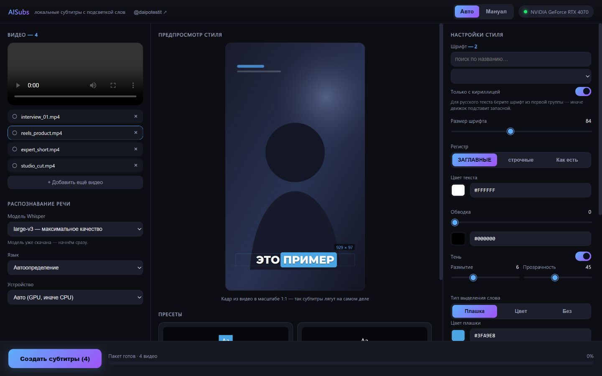

Субтитры с подсветкой произносимого слова
Распознаёт речь в видео и вшивает субтитры, подсвечивая слово, которое диктор произносит прямо сейчас — как в роликах VK, TikTok и Reels.

Предпросмотр показывает кадр из вашего видео в масштабе 1:1 — субтитры лягут ровно так же
Всё считается на вашем компьютере: видео и звук никуда не отправляются.
Цветная плашка под текущим словом, смена цвета текста (караоке) или простые субтитры без подсветки.
Whisper large-v3 с пословными таймкодами. На видеокарте NVIDIA, с автоматическим переходом на процессор.
Перетащите хоть десяток роликов — обработаются очередью, с прогрессом по каждому.
Все установленные в Windows плюс 14 из комплекта. Фильтр «только с кириллицей» проверяет реальные глифы, а не название.
Кадр из вашего видео 1:1: размер шрифта, отступы и переносы видны такими, какими попадут в результат.
Пять готовых; свои сохраняются и удаляются в один клик. Хранятся простым JSON.
Мелочи, из-за которых обычно приходится поправлять субтитры вручную.
«в», «и», «на», «что» переносятся вместе со следующим словом и никогда не показываются отдельным кадром.
Строится по заглавным буквам, поэтому слова с хвостами (Д, Ц, Щ, У) не съезжают, а высота не скачет по строке.
При крупном шрифте или длинном слове строка ужимается ровно настолько, чтобы уместиться.
Python и ffmpeg ставить отдельно не нужно — установщик принесёт их в папку проекта.
git clone https://github.com/jimmorisedu-boop/aisubs-local.gitsetup.bat — поставит Python, ffmpeg, библиотеки
CUDA (если есть видеокарта NVIDIA) и предложит на выбор модель
распознавания: от small (~500 МБ) до
large-v3 (~3 ГБ).run.bat — откроется окно приложения.| Операционная система | Windows 10 или 11, 64 бита |
| Видеокарта | NVIDIA с CUDA — желательно. Без неё работает на процессоре, но медленнее |
| Место на диске | около 5 ГБ: окружение и модель распознавания |
| Интернет | только для установки и разовой загрузки модели |